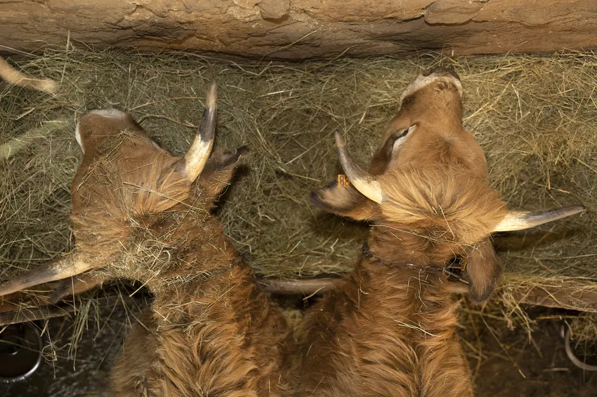

Repères chiffrés
Les chiffres de l'Aubrac
Race, département, circuits courts : les données, avec leurs sources.
Comment lire cette page
Les chiffres qui circulent sur l'élevage sont rarement datés et presque jamais sourcés. Cette page fait l'inverse : chaque donnée porte son année, son périmètre et un lien vers la publication d'origine. Aucune n'a été produite par la ferme.
Deuxième règle : quand les sources divergent, c'est écrit. Les effectifs d'une race bovine, par exemple, varient selon l'organisme qui compte, l'année retenue et la définition employée — « têtes », « vaches » ou « vaches de plus de trois ans » ne désignent pas la même chose. Présenter un seul chiffre comme la vérité serait plus commode, et moins honnête.
Une race passée tout près de la disparition
L'Aubrac était une race à trois fins : travail, lait d'estive, viande. La mécanisation a supprimé le premier usage, la fin de la traite en montagne le deuxième. Restait la viande, où d'autres races affichaient de meilleurs rendements. Les éleveurs ont croisé massivement, et le cheptel s'est effondré.
L'effondrement, puis le redressement. Chaque point est daté et sourcé dans le tableau ci-dessous.
Les trois premiers points proviennent de l'organisme de sélection de la race, les deux derniers du GEB. Les définitions ne sont pas strictement identiques d'une source à l'autre : la courbe donne la tendance, pas une série homogène. Le détail figure dans le tableau.
| Année | Effectif | Périmètre | Source |
|---|---|---|---|
| 1958 | 274 000 | vaches | OS Race Aubrac |
| 1972 | 102 000 | vaches | OS Race Aubrac |
| 1979 | 56 000 | vaches — minimum historique | OS Race Aubrac |
| 2014 | 170 000 | têtes | GEB, cité par Web-agri |
| 2024 | 245 000 | vaches | GEB, cité par Web-agri |
| 2025 | plus de 270 000 | vaches de plus de 3 ans | OS Race Aubrac |
Deux faits méritent d'être retenus. L'Aubrac est aujourd'hui la quatrième race allaitante française, loin derrière la Charolaise et la Limousine qui dépassent chacune le million de vaches. Et c'est la seule grande race allaitante dont le cheptel progresse : sur dix ans, la Charolaise et la Blonde d'Aquitaine ont perdu de l'ordre de 20 % de leurs effectifs.
C'est dans cette histoire que se place le choix de la ferme : conduire 80 mères en race pure, sans croisement. Les qualités qu'on prête à l'Aubrac — rusticité, vêlage sans assistance, aptitude à valoriser une herbe pauvre — sont précisément celles que le croisement dilue en premier.
Le Cantal, un pays d'herbe et de bovins
| Donnée | Valeur | Année | Source |
|---|---|---|---|
| Bovins présents dans les exploitations | 458 800 | fin 2024 | INSEE |
| Planèze de Saint-Flour, superficie | environ 25 000 ha | site Natura 2000 | Préfecture du Cantal |
| Planèze, altitude | 930 à 1 300 m | site Natura 2000 | Préfecture du Cantal |
La Planèze est un plateau basaltique, dont la roche a donné en se décomposant une terre profonde. Bonne terre, mais haute et froide : c'est un pays d'herbe plutôt qu'un pays de cultures, ce qui explique la densité de bovins du département.
Le document officiel de gestion du site signale un point rarement cité : les prairies de fauche fleuries y régressent, en surface comme en diversité, sous l'effet de l'intensification et de la fertilisation par lisier. Les mesures agro-environnementales du secteur visent justement à les maintenir. C'est ce qui donne son sens à la mention « foin de prairie naturelle », qu'on retrouve partout sans qu'elle engage grand monde.
Acheter en direct, en chiffres
| Indicateur | Valeur |
|---|---|
| Exploitations agricoles recensées | 389 779 |
| Part vendant en circuit court | 23 %, soit environ 90 000 exploitations |
| Parmi elles, part dont la vente à la ferme est le premier canal | près de deux tiers |
| Exploitations en agriculture biologique vendant en circuit court | 53 % |
| Exploitations conventionnelles vendant en circuit court | 19 % |
Source : Agreste, Primeur n° 2023-5, d'après le recensement agricole 2020.
Une précision de vocabulaire qui change tout : au sens officiel, un « circuit court » est une vente directe ou avec au plus un intermédiaire. La définition inclut la vente à distance. Un produit acheté en circuit court n'est donc pas nécessairement local, et l'inverse est vrai aussi. La vente à la ferme, elle, ne laisse aucune ambiguïté sur ce point : c'est le producteur qui vous sert.
Pour comparer concrètement les circuits — vente à la ferme, marché, magasin de producteurs, plateforme en ligne — avec les limites de chacun, le dossier producteur local près de Saint-Flour entre dans le détail.
Vous pouvez citer ces chiffres
Journalistes, étudiants, autres éleveurs : ces données sont publiques et leurs sources sont liées une par une. Reprenez-les, mais citez la source d'origine plutôt que cette page — l'INSEE, Agreste, l'organisme de sélection de la race ou la préfecture du Cantal selon le cas. C'est chez eux que la donnée sera mise à jour.
Si vous relevez une erreur ou un chiffre devenu obsolète, dites-le-nous : la page contact est là pour ça, et une correction vaut mieux qu'un chiffre qui traîne.